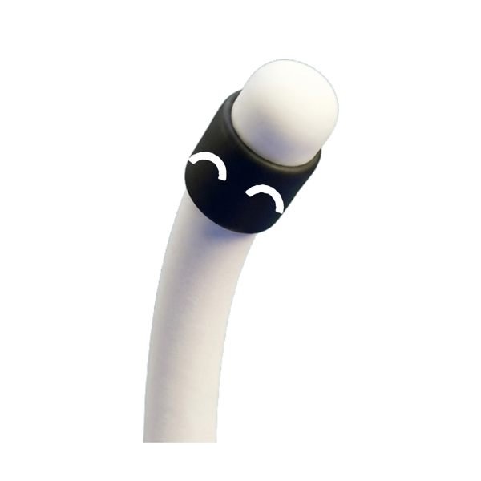
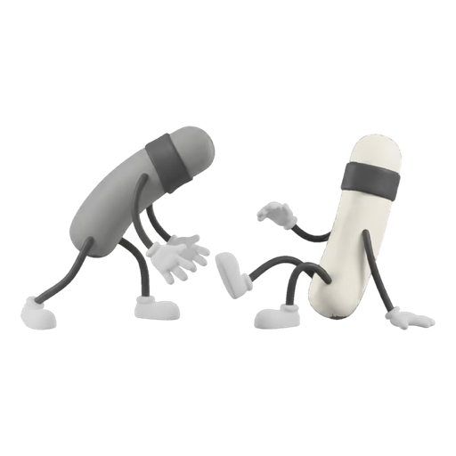
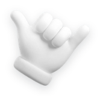

캐릭터는 이렇게 합쳤습니다
몸과 얼굴은 띠 캐릭터, 팔·다리·장갑 손·신발은 MY 화면의 주짓수 동작 캐릭터 그대로입니다. 셋 다 앱에 이미 있는 그림이고, Gemini에 이 셋을 같이 보여 주고 리액션을 그리게 했습니다.



레퍼런스에서 가져온 것
세 레퍼런스에서 하나씩 가져왔습니다. 짧은 반복, 사람 손짓, 쨍한 색입니다.
1~2초 반복, 한 장에 한 감정
짤처럼 끝없이 도는 짧은 동작. 그래서 리액션마다 시작과 끝이 이어지는 동작 하나만 넣었습니다.
사람 손짓을 그대로
검지 세워 절레절레, 화이팅, 쏘쏘. 흰 장갑 손 덕분에 사람 손짓을 그대로 옮길 수 있습니다.
쨍한 색, 스포티·힙
리액션마다 원색 배경 하나와 작은 도형 장식(동그라미·세모·물결선). 플랫 일러스트 시안도 따로 뽑았습니다.
Behance 페이지는 자동으로 열리지 않아서, 말씀해 주신 설명과 보내 주신 캡처를 기준으로 했습니다.
3D 리액션 — Gemini로 뽑은 시안
2프레임 루프는 Gemini에 같은 장면에서 손 위치만 바꾼 두 번째 그림을 시켜서 번갈아 보여 주는 짤입니다. 여기에 리액션 성격대로 콩콩 뛰기·숨쉬기·좌우 흔들기·두근거림을 하나씩 얹었습니다. 실제 제작 땐 두 장을 키프레임 삼아 사이 동작을 채우면 됩니다.
헥헥·OSS처럼 두 번째 프레임이 첫 프레임과 거의 같은 것도 있습니다. Gemini가 “나머지는 그대로”를 너무 충실히 지킨 경우라, 실제 제작 땐 키프레임을 사람이 잡는 게 낫습니다. 오른쪽 아래 작은 반짝이 표시는 Gemini가 넣는 표시입니다. 실제 에셋으로 쓸 땐 디자이너가 이 그림을 바탕으로 다시 렌더하거나 표시 없는 방식으로 다시 뽑아야 합니다.
스타일 비교
같은 캐릭터를 네 가지로 그려 봤습니다. 앱 안에는 3D 원색 배경, 공유용 스티커는 다이컷이 잘 맞습니다.
움직임 연구 16종
Gemini는 정지 그림만 만들어서, 동작 타이밍은 코드로 그린 캐릭터로 따로 잡았습니다. 손짓·몸 움직임·반복 길이를 확인하는 용도입니다. 카드를 누르면 한 바퀴를 8프레임으로 펼쳐 봅니다.
앱에 넣으면
앱 안에서는 글자 없는 버전을 씁니다. 댓글 리액션, 기록 완료, 빈 화면이 가장 먼저 쓸 자리입니다.
다음 단계
고르실 것과, 고른 뒤 실제 에셋으로 만드는 순서입니다.
정해 주실 것
- 먼저 만들 리액션 6~8개 (위 카드 이름으로)
- 스타일 하나: 3D 원색 배경 / 다이컷 스티커 / 플랫
- 띠 색: 흰띠만, 또는 5가지 모두
- 쓸 곳: 앱 안 먼저, 공유 스티커는 나중
실제 에셋으로
- 고른 리액션을 디자이너가 3D로 다듬어 키프레임 2~3장
- 앱 안: Lottie(이미 앱에 있음) 또는 짧은 HEVC 투명 영상
- 공유 스티커: 360px 반복 GIF·APNG
- 글자는 그림에 굽지 않고 앱에서 얹기
만든 방법
- Gemini에 참고 그림 4장(띠 몸, 동작 캐릭터 2장, 장갑) + 리액션별 지시문
- 루프는 같은 대화에서 “손 위치만 바꾼 다음 프레임”을 한 번 더
- 지시문·참고 그림·원본은 저장소 design/reaction-stickers/에